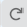

Bill of Materials for Subscriber Module¶
LINKPlanner automatically calculates the Bill of Materials (BOM) for the required components for the Subscriber Module. The BOM contains the list of part numbers and associated quantities for the Subscriber Module. Optional items can be added to the list.
To display the Bill of Materials for the Subscriber Module, open the Subscriber Module page and select the clipboard symbol next to the Save button.
Bill of Materials for Subscriber Module¶
P/N: The Cambium part number. If the component is not supplied by Cambium, this is set to ‘(no part number)’.
Description: Description of the components.
Qty: Quantity required. This value can be edited, for items automatically added if the quantity is increased the row will be shown in green, if the quantity is decreased from the recommended value, the row will be shown in red. To reset to the default value, click on the value and choose .
Notes: Displays information about certain items, such as whether they are obsolete.
To add additional items to the BOM, click . A list of optional extras for the Network Device will be displayed. To add items to the BOM tick the box next to each item required and click OK. The item will appear in the main list, where the quantity can be adjusted by selecting the number in the Qty column and adjusting as required. To delete optional items from the BOM list, tick the box next to each item and click  . A star denotes optional extras which have been added to the automatic BOM items.
. A star denotes optional extras which have been added to the automatic BOM items.
Bill of Materials Optional Extras for Subscriber Module¶
The groups and extras will vary depending on the chosen product.
Cable, Accessories & Spares: This allows items such as RF and Ethernet Cable to be added to the order.
Capacity Licenses: PMP 450 upgrade keys.
Installation & Mounting: This allows items such as mounting brackets to be added to the order.
Lightning Protection: This allows Lightning Protection Units, grounding kits or surge suppressors to be added to the order.
Power: This allows ePMP spare power supplies to be included with the order
Quick Deploy Positioner: This allows the parts for the Quick Deploy Positioner to be added to PMP 450i SM, PTP 670 HCMP and PTP 700 HCMP Slave.
Security: This allows PTP 670 and 700 HCMP security license options to be included with the order
Warranty & Support: Additional warranty options are available to extend the warranty by 1, 2 or 4 years.
To filter the list of optional extras, enter a part number or description in the Filter field.

For instructions on how to view and save the BOM for the entire project, see Bill of Materials for Project.
Viewing & saving the Subscriber Module BOM file in MS Excel¶
To view the Subscriber Module BOM in Excel, click  while viewing the Subscriber Module BOM. Once in the spreadsheet the file can be saved as normal.
while viewing the Subscriber Module BOM. Once in the spreadsheet the file can be saved as normal.
All numeric only part numbers consist of 11 digits, if the number displayed is only 10 digits the part number should start with a zero.